Mary Kay Cosmetics
Overview · MaryKay.com Website Redesign
In my role for Mary Kay Cosmetics, I led User Interface (UI) design efforts of the MaryKay.com website redesign project that centered around enhancing the user experience. Leveraging tools such as Figma, Illustrator, and Photoshop, I meticulously crafted high and low-fidelity prototypes and wireframes for a revamped Mary Kay community section.
A key aspect of the redesign involved implementing a sophisticated three-tiered navigation menu, strategically categorizing content into sections for shopping, services, and community engagement. This multifaceted approach aimed to streamline user interactions and optimize the overall navigation experience, ensuring that visitors could seamlessly explore and engage with Mary Kay's offerings.
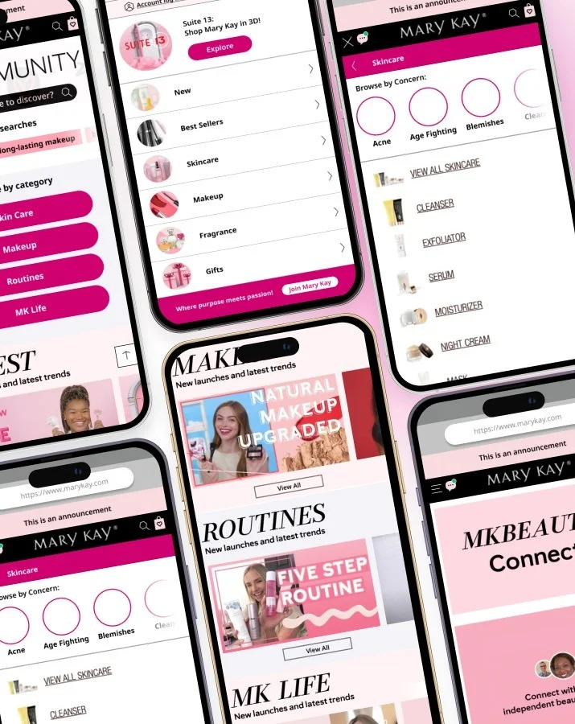
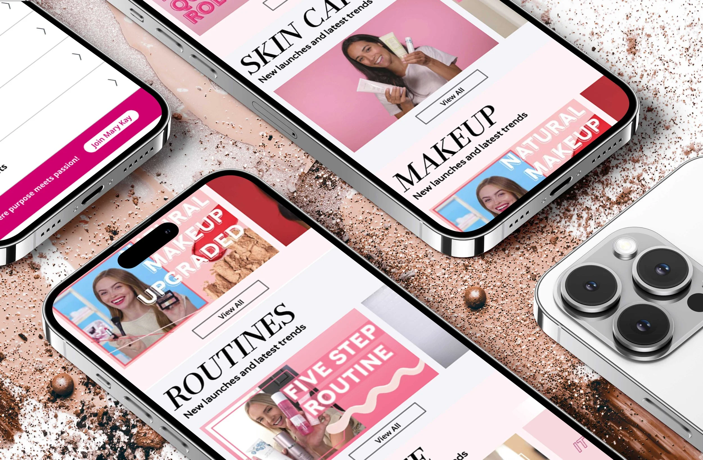
Project Objective
The current Mary Kay Cosmetics website faces usability challenges and lacks an efficient structure to accommodate the diverse needs of its users.
Goals
This project aims to address these issues by implementing a comprehensive website redesign, utilizing tools like Figma, Illustrator, and Photoshop to enhance the overall user experience:
- Create an intuitive, visually appealing platform
- Facilitate easy navigation for shopping and services
- Foster a vibrant, engaging community space
Timeline
3 Weeks
Team
Myself and 1 User Experience Designer
Tools
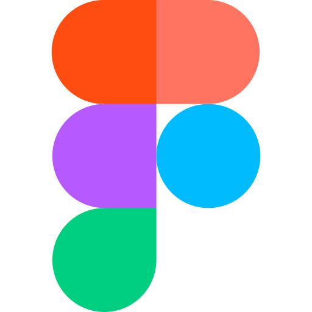
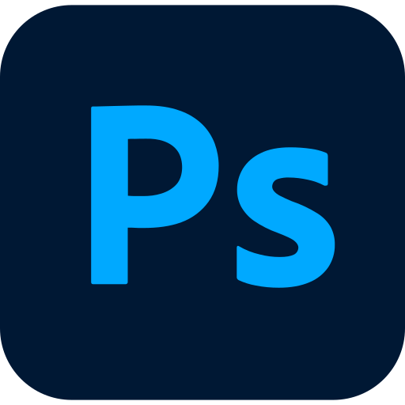
Target Audience
The redesigned Mary Kay Cosmetics website targets a diverse audience interested in beauty and skincare products, services, and community engagement. This includes current and potential customers seeking a user-friendly platform for product exploration and purchase, as well as those interested in Mary Kay services and community interactions across diverse demographics.
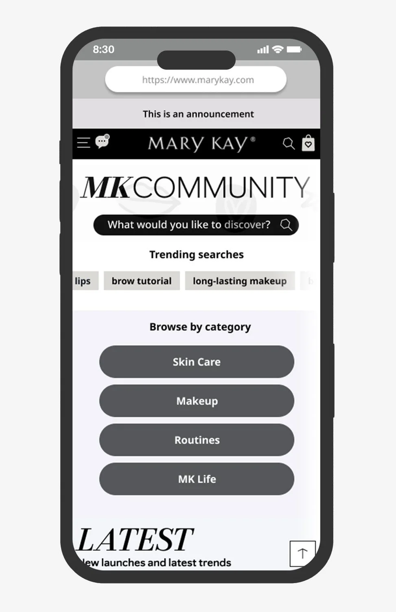
High-Fidelity Mockups
The revamped three-tiered navigation and community section, brought to life as high-fidelity screens.
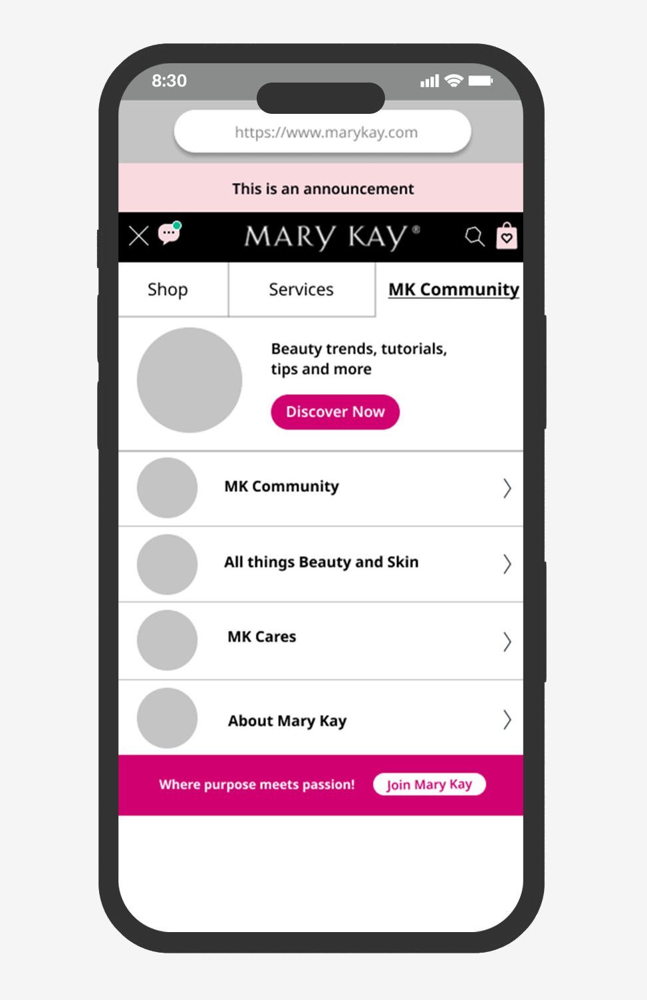
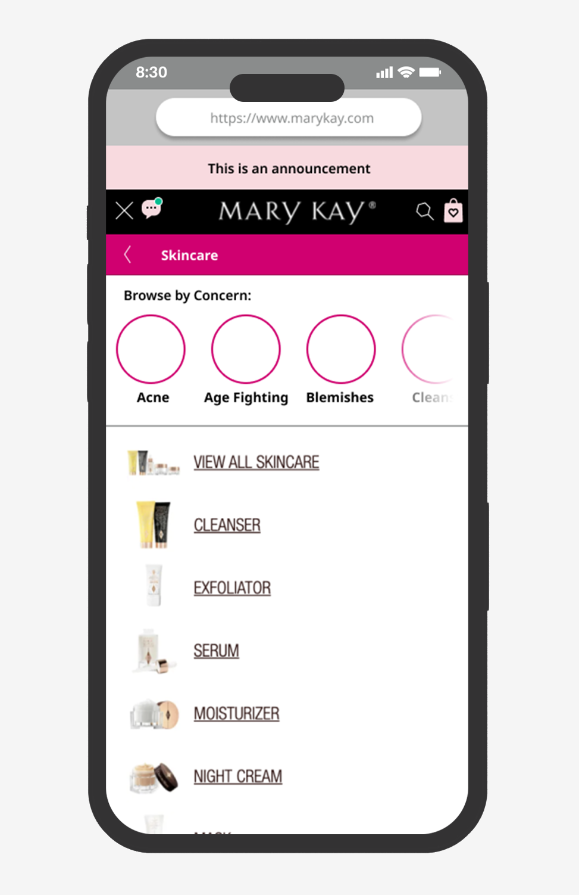
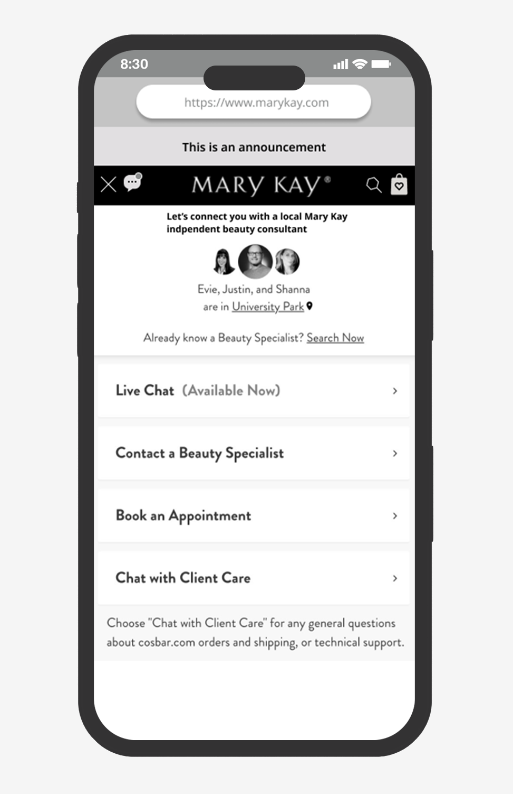
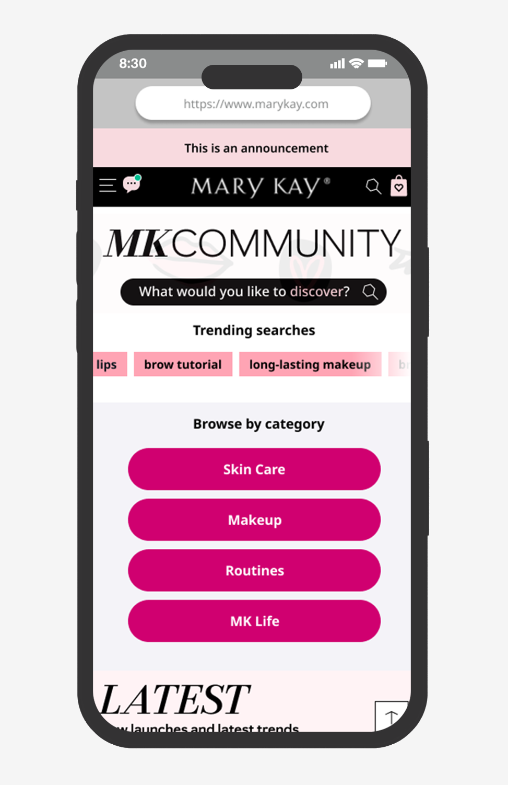
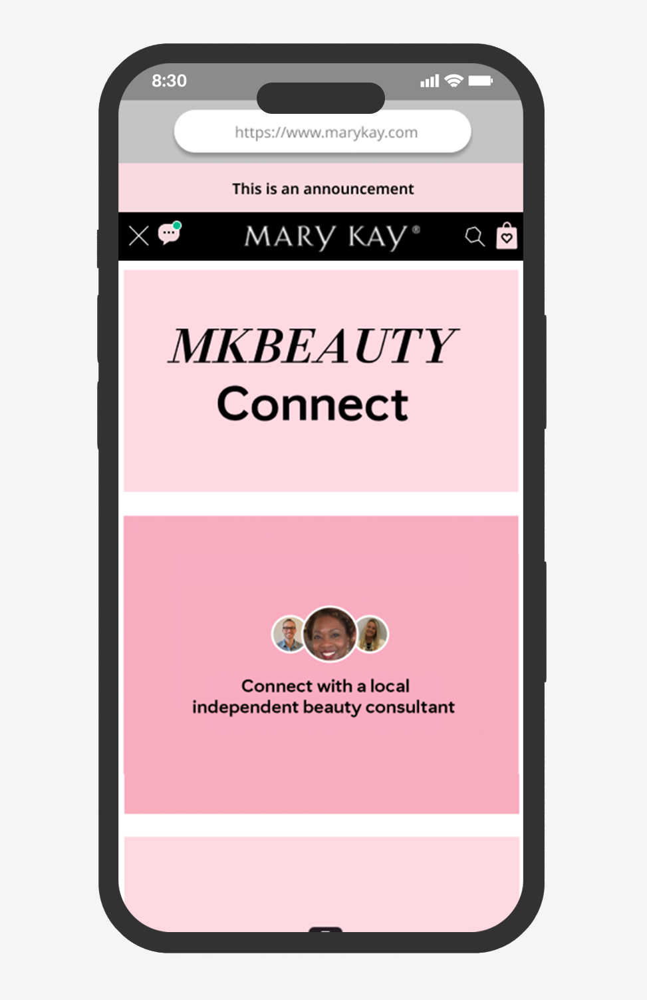
Low-Fidelity Mockups and Process
Wireframes and sketches demonstrating the design-thinking principles behind the redesign.
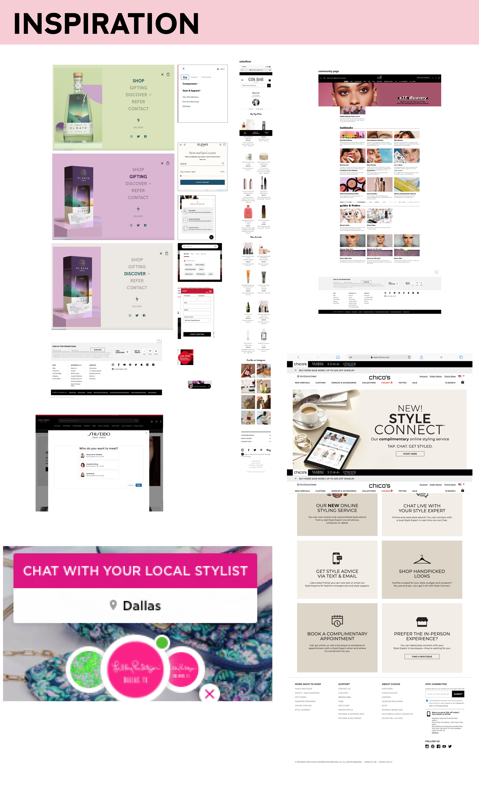
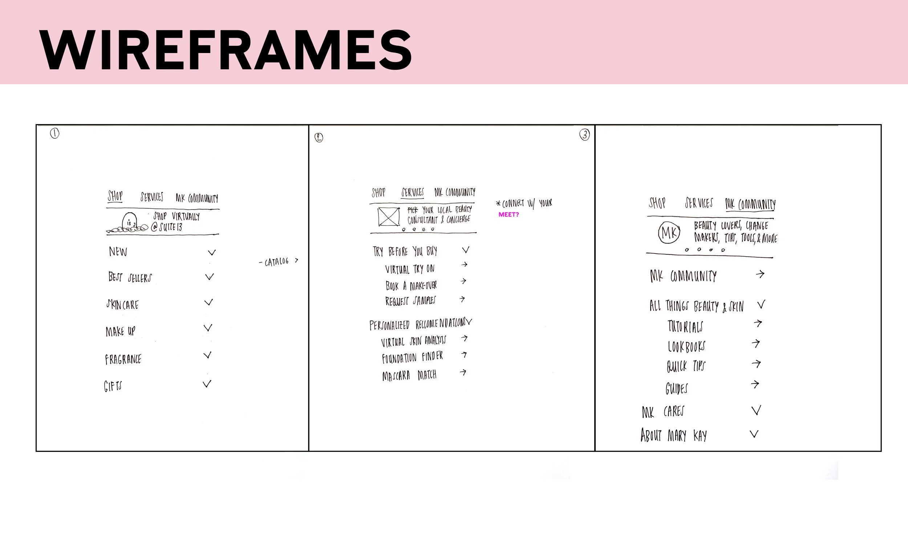
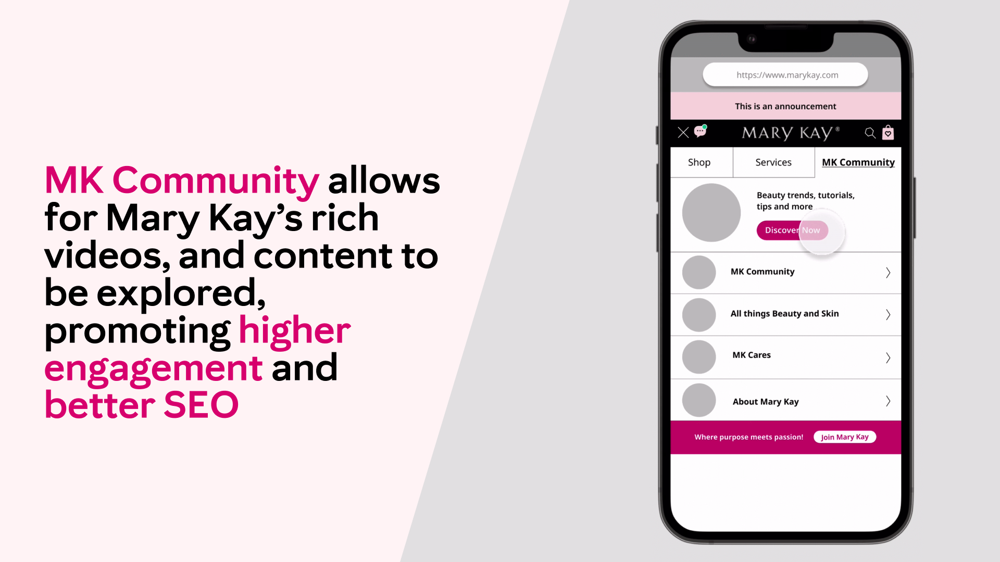
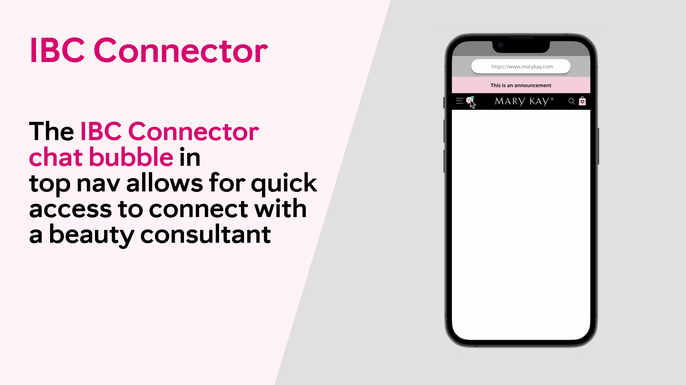
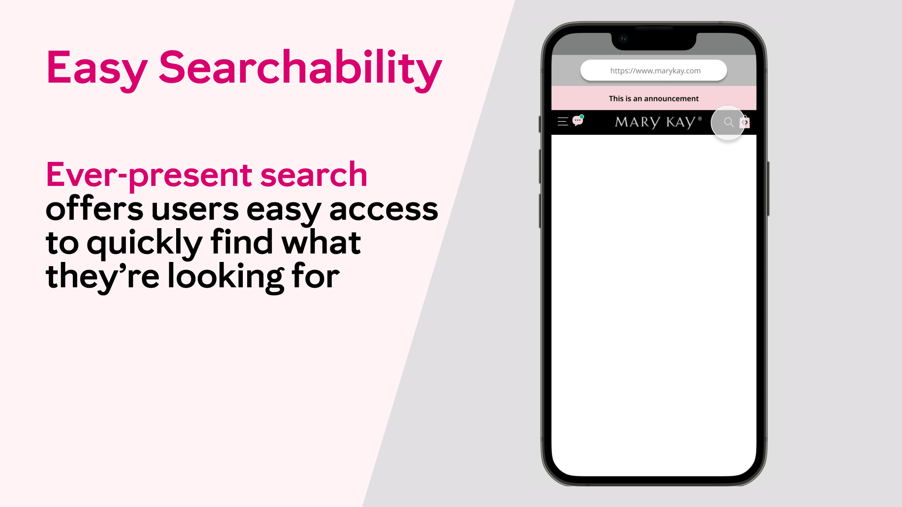
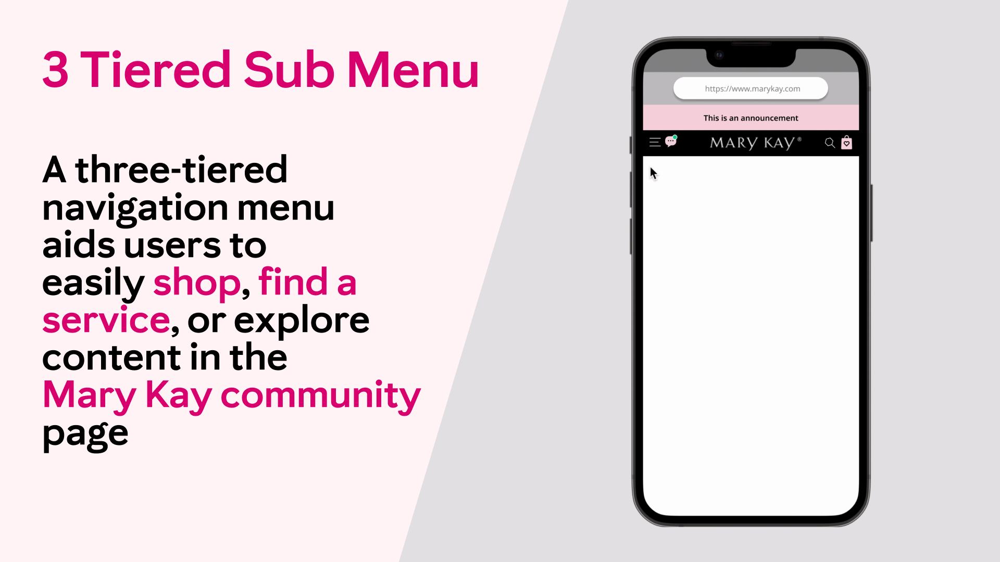